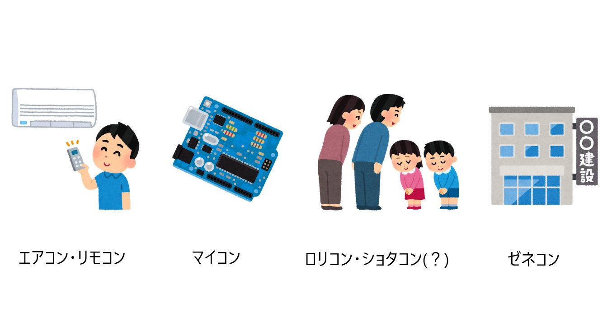

こんにちは。DTM班でお世話になっている1回生のLen Dilemmaです。
それでは、この記事を開いてくださったそこのあなた！突然ですが問題です。後述する解答が目に入らないように、ここからは少しずつ読み進めてください。
問題：エアコンの「コン」といえば「コンディショナー」の略ですが、リモコンの「コン」といえば何の略？
解答
↓
↓
↓
↓
↓
↓
↓
↓
↓
↓
↓
↓
「コントローラー」と答えた方、正解です。おめでとうございます！
リモコンは「リモートコントローラー」の略です。直訳すると「遠隔操作機」といったところでしょうか。
きっとこの問題を読んだ大多数が正解できたことと思います。答えられなかった方も、「あ～！アレ何だっけ...？」というふうに、言葉が喉まで出かかっているのに思い出せなかった方がほとんどでしょう。おしいです！
この記事では、この"エアコンリモコン問題"を取り上げて早押しクイズを語っていきたいと思います。
(先に言っておきますが、この記事の見解はあくまで私の一意見です。「お前の記事の通りに早押ししたら誤答したんだけどさ、オタクくん、どう落とし前つけてくれんの？」と言われても責任は負いかねます。ご了承ください。)
いきなりクイズを出してしまいましたが、まずは「普通のクイズ」を皆さんに否応なしに体験してもらいたかったからこんなことをしたのです。
ん？「"普通の"クイズ」...？？？
そうです、実は先ほどのクイズ、「"早押し"クイズ」とは大きく異なります。では、早押しクイズにおいてこの問題が出された場合どこが違ってくるのか？見てみましょう。
～ここは早押しクイズ会場～
出題者「問題。「エアコン」の「コン」といえば「コンディショナー」の略ですが、「リ
＼ﾋﾟﾝﾎﾟｰﾝ!／（早押しボタンが押される音）
解答者Ａ「コントローラー。」
＼ﾋﾟﾝﾎﾟﾝﾋﾟﾝﾎﾟﾝﾋﾟﾝﾎﾟｰﾝ!／(せいかいのおと)
解答者Ａ「やった～笑」
解答者Ｂ「くやし～笑」
...はい。こんな感じですね。要するに早押しクイズの場では、基本的に"問題文は最後まで読まれない"んです。だって、問題文を聞いている途中でも答えがわかったら解答していいから。もっと言えば、正解者が出たら他の人にはもう解答権がないからです。
(とはいっても、問題文の全文が気になる方のために、ほとんどの出題者は正解者が出た後に通しで読み上げてくれます。だから「さっきの問題全然意味わからんくてモヤモヤするな...」みたいなことは基本ないです。)
さて、見事正解した解答者Ａくんは、最後まで問題文を聞いていないのにどのようにして解答を一つに絞ったのか気になりますね。次の項ではそこを掘り下げていきましょう。
殆どの早押しクイズの問題文には「確定ポイント」と呼ばれるものがあります。「確定ポイント」とは、「そこまで問題文を聞けば解答が一つに絞れる」というポイントのことです。
「確定ポイント」の直後で出題者の問読みが止まる、そういうボタンの押し方をするのが理論上最速で理想的とされています。。
もう一度確認すると、Ａくんはこの問題において「リモコン」の「リ」を確定ポイントとしたわけですね。
言い換えれば、出題者が「～～～ですが、リ」と発音した時点でＡくんは解答を一つに絞れたので早押しボタンを押したというわけです。
何故か？その理由は２つあります。１つ目は、早押しクイズの問題文に対する理解。２つ目は、対比関係を見抜く力。
ではまず、①問題文に対する理解について。もし仮に、この問題が
「エアコンの「コン」といえば何の略？」
だったらどう思うか。あまりにも難易度が低いし、何より前置きがなくてとても短いんですね。実際に読んでみるとその突拍子のなさがよくわかります。
ある程度慣れたクイズプレイヤーは、このような簡単で突拍子がないような問題文が読み上げられたら「これは"ですが問題"の前半部分だな」と反応できるように対策しているんです。だからＡくんはしっかり「リ」まで待つことができたんです。
ここでクイズの世界に足を踏み入れたばかりの方はこう思うことでしょう。
「じゃあ前半部分で引っかからなかったのはわかったけど、「リ」を聞いただけで後に続く言葉が「リモコン」って判断するのはさすがに山勘じゃないの？」
いいえ、勘ではないんです。ここで、②対比関係を見抜く力の話になってきます。
前半部分のメインの話題はエアコンの「コン」が何の略か、ということでしたよね。じゃあ、もしも後半部分で「ではワープロの「プロ」は何の略でしょう？」って聞いてきたら、
「エアコンとワープロに何の関係もなくない？じゃあ前半部分でエアコンの話をしなくてもいいじゃんか！」ってなりますよね。必然性がないんですよ。
つまり、逆に言えば、後半部分は「エアコン」の次に読まれる必然性がある、それでいて何かを略した言葉が読まれるに違いないんです。早押しクイズの問題文は往々にしてそういった美しさが突き詰められているのです。
このことを知っていたＡくんは、前半部分が読み終わったあたりで「後半部分は少なくとも○○コンという略語についての話題が来るはずだ(○○に何が入るかはわからないが)」というふうにソコソコの見当をつけていたんですね。
○○コンという言葉はいっぱいありますが、エアコンと同じく４音のものが特に多いです。
有名なところだとパソコン(パーソナルコンピューター)、リモコン、マイコン(マイクロコンピューター)、ロリコン(ロリータコンプレックス)、ショタコン(ショウタロウコンプレックス)などがありますね。難しいところだとゼネコン(ゼネラルコントラクター)でしょうか。
ちなみに。挙げておいてなんですが、後半部分にマイコンが来ることは絶対にありません。理由は次項で解説します。
まあとにかく、○○に何が入るかはわからなくても、この言葉をあらかじめ頭にボンヤリと浮かばせて準備しておけば、「パ」、「リ」、「マ」、「ロ」、「ショ」、「ゼ」のどれが読まれてもすぐに対応できるんですね。
以上の２つ考え方によりＡくんの正解は築きあげられたのです。おめでとうＡくん。
Ａくんが「リ」で押したこの問題ですが、私はもしかしたらもっと早く押せるのではないかと考えています。どこで押すのかというと、
出題者「問題。エアコ
＼ﾋﾟﾝﾎﾟｰﾝ!／
ここです。「エアコン」の「コ」です。ここが確定ポイント？うせやろ？となるかもしれませんが私の考えを以下に述べます。ちょっと締め切りまで余裕がないし学科の課題も抱えているので箇条書きで思考の順を追って簡潔に書きますが(すみません)、
・エアコ、まで読まれた時点でその言葉がエアコンであることは明確。
・エアコンは略語であるから、"ですが問題"で別の略語を引き合いに出しそれが何の略かを問う問題かが出る可能性が高い。
・「エア○○」という言葉と「○○コン」という言葉とでは圧倒的に後者のほうが数が多いため、後者の方を聞かれる可能性が高い。
・エアコンとの対比で先ほど挙げた○○コンの言葉たちの中で、リモコンとマイコンは後半部分の話題として必然性が高いので、聞かれる可能性も高い。なぜならエアコンは必ずリモコンとセットであり、またエアコンの中にはマイコンが含まれているから。」
・マイコンは「マイクロコンピューター」の略であるが、「マインドコントロール」の略でもあるため、こちらを問題文に採用すると解答が２つとなってしまうので出題されることはあり得ない。
・以上により、後半部分で聞かれるものとして残っている候補は一番最後まで残った「リモコン」の「コン」は何の略か、である。即ち解答は「コントローラー」である。
こんな感じです。さらに掘り下げると、出題者の発音の仕方、「読ませ押し」という技術の練度、解答者の趣味や早押しクイズに対する練度を考慮した問題文のチューニング、などなどいろいろな細かい話がついてまわるのですがこれは今回は考えないことにします。
「エアコ」で押して正解できたら本当にかっこよいですね。実戦で決めることは相当厳しいでしょうがいつかこういう正解をしてみたいものです。
以上で私の記事は終わりです。よくもまあたった１問についてこんだけ書いたなと思います。「早押しクイズは単なる知識勝負ではなく、濃密な技術勝負の側面もある」ということが伝わっていたら幸いです。
めっちゃめちゃ雑な文になってしまいましたがご了承ください。
私は自作クイズの問題文が少なくとも１００問はあるので、早押しクイズやってみたい！って方がいらっしゃったら是非私にお声がけください。(Twitter→@LenDilemma Email→lendilemma@gmail.com)検索してもいくつか問題が出てくると思いますし、それを友達と出し合ってみるのも面白いでしょう。
というかマジで早押しクイズ俺がとにかくやりたいので。飢えているので、みんなやりましょう。やりましょう！
最後まで読んでくれてありがとうございます。